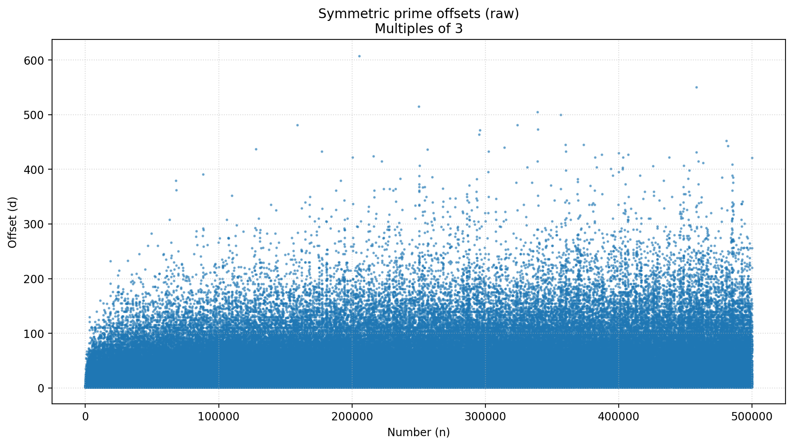
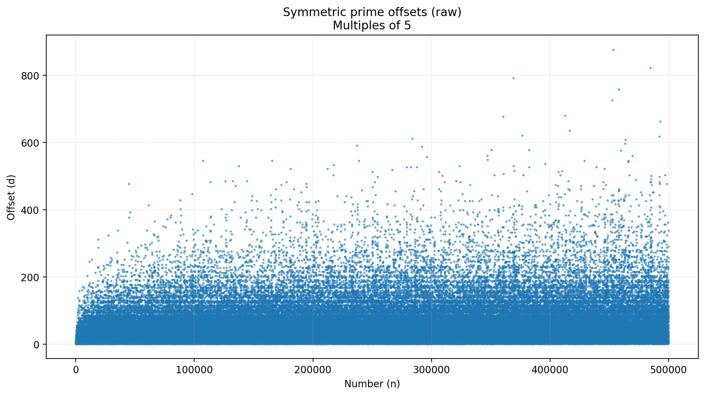
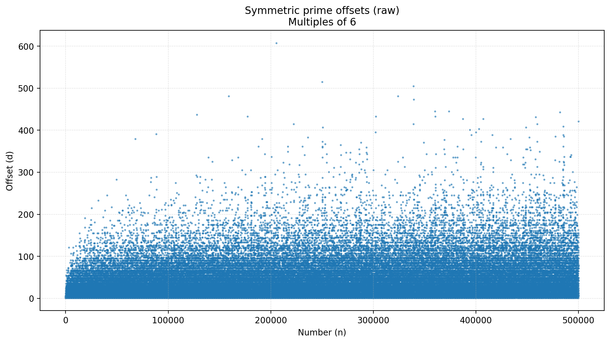
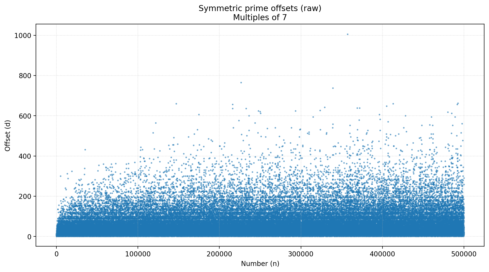

Twin Primes
Twin primes — pairs of primes separated by two — are central to the DaveField approach. This page collects background, visualisations, and exploratory tools related to twin primes.
Background
Twin primes have fascinated mathematicians for centuries. This page highlights their role in the conjecture and provides ways to explore them.
Visualisations

Mirror Pairs (Multiples of 3 to 500K)

Mirror Pairs (Multiples of 5 to 500K)

Mirror Pairs (Multiples of 6 to 500K)

Mirror Pairs (Multiples of 7 to 500K)